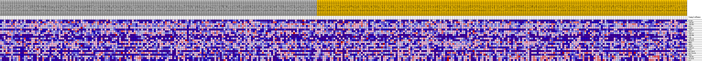
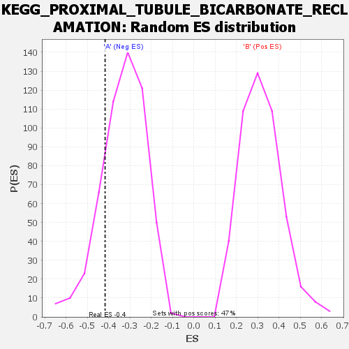

| | | Dataset | my.my.cls#B_versus_A.my.cls#B_versus_A_repos |
| Phenotype | my.cls#B_versus_A_repos |
| Upregulated in class | A |
| GeneSet | KEGG_PROXIMAL_TUBULE_BICARBONATE_RECLAMATION |
| Enrichment Score (ES) | -0.41687787 |
| Normalized Enrichment Score (NES) | -1.255878 |
| Nominal p-value | 0.18761726 |
| FDR q-value | 0.53190076 |
| FWER p-Value | 0.961 |
Table: GSEA Results Summary
 Fig 1: Enrichment plot: KEGG_PROXIMAL_TUBULE_BICARBONATE_RECLAMATION
Fig 1: Enrichment plot: KEGG_PROXIMAL_TUBULE_BICARBONATE_RECLAMATION
Profile of the Running ES Score & Positions of GeneSet Members on the Rank Ordered List
| SYMBOL | TITLE | RANK IN GENE LIST | RANK METRIC SCORE | RUNNING ES | CORE ENRICHMENT | | 1 | FXYD2 | na | 4831 | 0.087 | -0.0177 | No |
| 2 | ATP1B2 | na | 5413 | 0.083 | 0.0370 | No |
| 3 | ATP1B3 | na | 6254 | 0.079 | 0.0835 | No |
| 4 | GLS | na | 8420 | 0.068 | 0.0987 | No |
| 5 | GLUD1 | na | 9882 | 0.062 | 0.1214 | No |
| 6 | ATP1A2 | na | 11369 | 0.057 | 0.1394 | No |
| 7 | GLS2 | na | 17888 | 0.035 | 0.0519 | No |
| 8 | ATP1A1 | na | 18754 | 0.033 | 0.0624 | No |
| 9 | ATP1B4 | na | 22689 | 0.022 | 0.0103 | No |
| 10 | CA4 | na | 28040 | 0.009 | -0.0773 | No |
| 11 | ATP1A4 | na | 28490 | 0.008 | -0.0792 | No |
| 12 | SLC9A3 | na | 29077 | 0.006 | -0.0846 | No |
| 13 | MDH1 | na | 31837 | -0.000 | -0.1331 | No |
| 14 | AQP1 | na | 31981 | -0.001 | -0.1350 | No |
| 15 | GLUD2 | na | 34454 | -0.007 | -0.1733 | No |
| 16 | ATP1A3 | na | 44100 | -0.033 | -0.3177 | No |
| 17 | PCK2 | na | 44257 | -0.034 | -0.2940 | No |
| 18 | SLC38A3 | na | 46860 | -0.043 | -0.3068 | No |
| 19 | SLC25A10 | na | 50326 | -0.057 | -0.3237 | No |
| 20 | PCK1 | na | 55603 | -0.110 | -0.3311 | Yes |
| 21 | ATP1B1 | na | 56263 | -0.137 | -0.2354 | Yes |
| 22 | SLC4A4 | na | 56299 | -0.141 | -0.1258 | Yes |
| 23 | CA2 | na | 56509 | -0.168 | 0.0020 | Yes |
Table: GSEA details [plain text format]

Fig 2: KEGG_PROXIMAL_TUBULE_BICARBONATE_RECLAMATION
Blue-Pink O' Gram in the Space of the Analyzed GeneSet

Fig 3: KEGG_PROXIMAL_TUBULE_BICARBONATE_RECLAMATION: Random ES distribution
Gene set null distribution of ES for KEGG_PROXIMAL_TUBULE_BICARBONATE_RECLAMATION